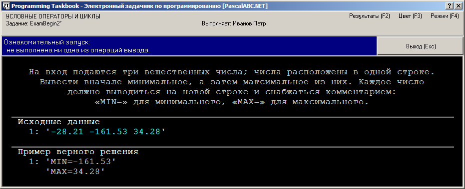
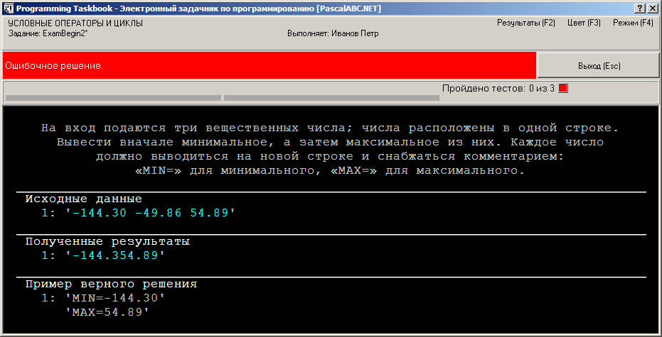
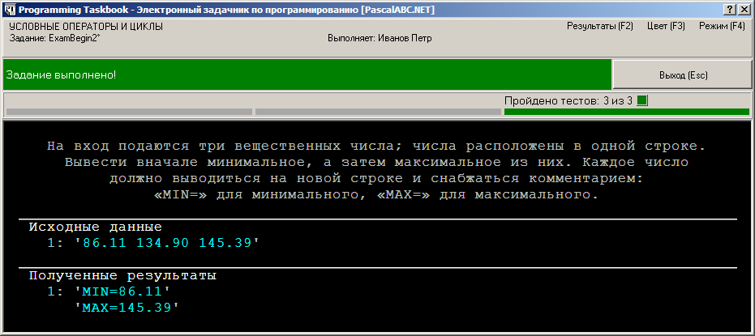
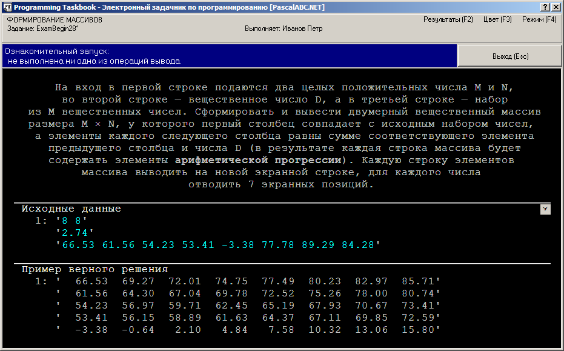
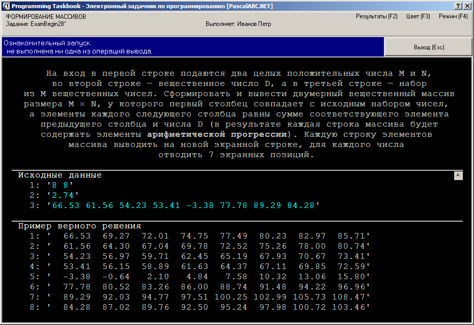
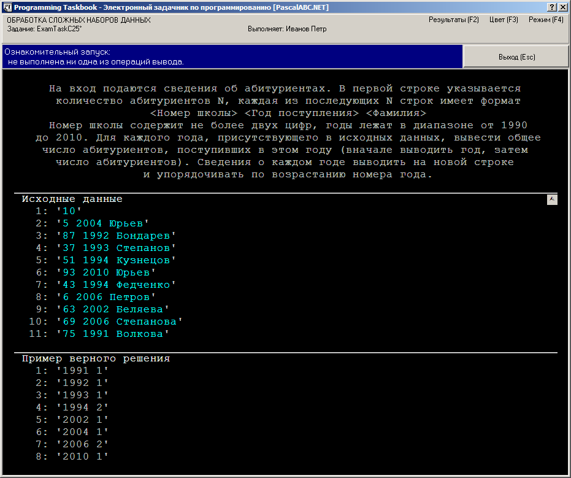
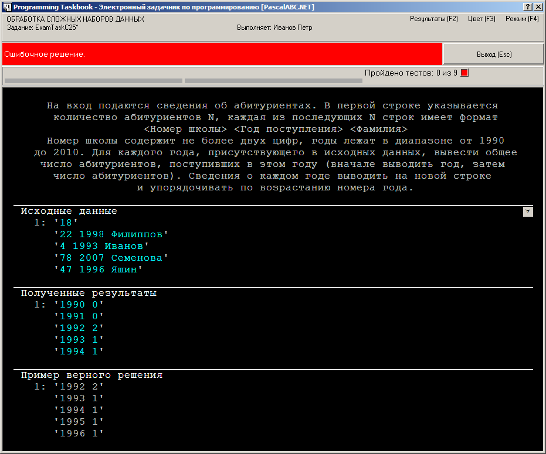
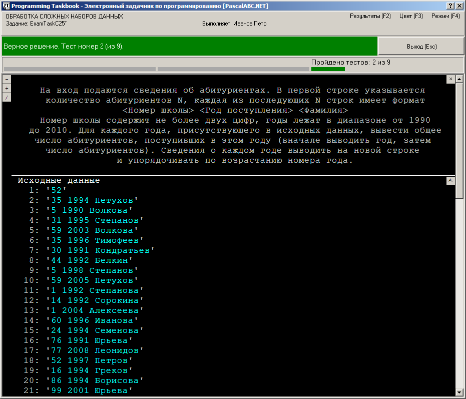
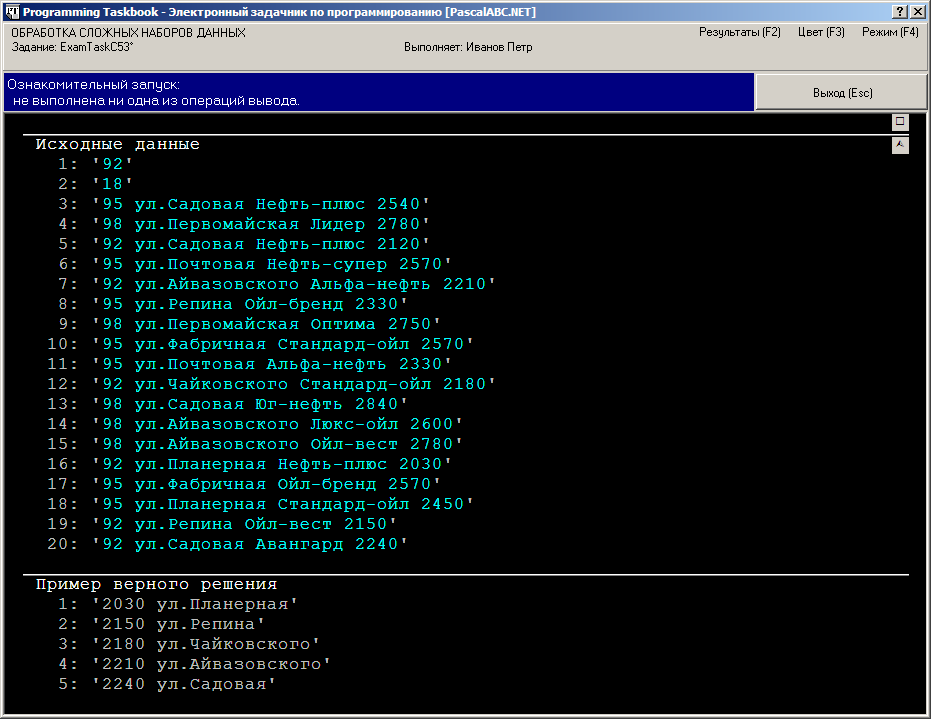

Группа заданий ExamBegin посвящена базовым алгоритмическим задачам, включенным в кодификатор ЕГЭ по информатике. Процесс выполнения подобных заданий мы рассмотрим на примере одной из простых задач, связанных с нахождением максимумов и минимумов из двух, трех или четырех чисел без использования массивов и циклов.
ExamBegin2°. На вход подаются три вещественных числа; числа расположены в одной строке. Вывести вначале минимальное, а затем максимальное из них. Каждое число должно выводиться на новой строке и снабжаться комментарием: «MIN=» для минимального, «MAX=» для максимального.
Напомним, что программу-заготовку для решения этого задания можно создать с помощью
команды
меню «Модули | Создать шаблон программы», кнопки
 или клавиатурной
комбинации Shift+Ctrl+L. Приведем текст созданной заготовки:
или клавиатурной
комбинации Shift+Ctrl+L. Приведем текст созданной заготовки:
uses PT4Exam;
begin
Task('ExamBegin2');
end.
После запуска программы на экране появится окно задачника:

Обсудим особенности программы-заготовки и окна задачника.
В программе-заготовке вместо модуля PT4
подключается модуль PT4Exam, специально предназначенный для использования при выполнении
заданий групп Exam. Данный модуль содержит реализацию единственной процедуры Task,
инициализирующей задание. Никакие дополнительные процедуры, связанные с вводом-выводом, в него не включены.
Это обусловлено тем, что ввод-вывод при выполнении заданий групп Exam надо выполнять, используя
стандартные процедуры языка Pascal.
Основной особенностью окна задачника является то, что в разделе исходных данных отсутствуют данные, выделенные желтым цветом (напомним, что желтый цвет используется для выделения данных, которые необходимо вводить с помощью специальных процедур ввода задачника). Вместо этого в окне отображается строка бирюзового цвета, содержащая числовые данные. Вид строки подчеркивает то обстоятельство, что вводить данные требуется не с помощью специальных процедур ввода, имеющихся в задачнике, а с помощью стандартных процедур языка Pascal. Отметим, что бирюзовый цвет используется в окне задачника для отображения «внешних» данных (содержащихся в файлах или динамических структурах), доступ к которым должен осуществляться с помощью стандартных средств используемого языка программирования.
Пример верного решения выделяется серым цветом (в отличие от «настоящих» результатов, выведенных программой учащегося, которые, как и входные данные, выделяются бирюзовым цветом), однако представление выходных данных совпадает с представлением входных: это набор строк, содержащих числовые данные (дополненные комментариями). Вид данных в разделе результатов показывает, что для их вывода, как и для ввода исходных данных, необходимо использовать стандартные процедуры языка Pascal.
Примечание. Если вы уже выполняли задания, связанные с обработкой файлов, то можете заметить, что отображение данных в заданиях групп Exam в точности соответствует способу отображения содержимого текстовых файлов. Это совпадение не случайно. На самом деле во всех заданиях групп Exam все исходные данные хранятся в специальном входном текстовом файле, а все результаты должны записываться в специальный выходной текстовый файл. Однако при этом не требуется выполнять особых действий, связанных с определением имен этих файлов, связыванием файлов с файловыми переменными, открытием и закрытием файлов (все эти действия выполняются задачником автоматически). Для программы, выполняющей задание, эти файлы играют роль стандартных потоков ввода-вывода, поэтому для доступа к ним достаточно использовать обычные процедуры ввода-вывода языка Pascal.
Приступим к выполнению задания. В данном случае следует использовать алгоритм, не требующий применения массивов, поэтому опишем три простые переменные вещественного типа и введем в них исходные данные:
uses PT4Exam;
var
a, b, c: real;
begin
Task('ExamBegin2');
read(a, b, c);
end.
Мы воспользовались стандартной процедурой ввода read, введя все три исходных числа за один ее вызов.
Этого же результата мы могли бы добиться и с помощью процедуры readln:
readln(a, b, c);
Заметим, что использование отдельных процедур readln для ввода каждого числа приведет к ошибочному результату:
readln(a);
readln(b);
readln(c);
В этом случае уже после ввода первого числа произойдет автоматический переход на следующую строку с исходными данными. Поэтому оставшиеся в первой строке числа будут пропущены, а поскольку во второй строке «ничего нет» (входной поток состоит из единственной строки), будет выведено сообщение об ошибке «Input string was not in a correct format» («Входная строка имела неверный формат»).
Приведенный пример показывает, что при организации ввода данных в заданиях групп Exam необходимо учитывать особенности
стандартных процедур read и readln.
При запуске приведенного выше варианта программы вид окна не изменится, поскольку мы не вывели никаких данных.
В заданиях групп Exam запуск программы считается ознакомительным до тех пор, пока программа не выведет
хотя бы один элемент результирующих данных. Кроме того, задачник не контролирует,
каким образом программа читает исходные данные (например, мы могли бы ввести всю исходную строку
в переменную типа string, а затем «разобрать» эту строку, выделив из нее три числа
и преобразовав их к типу real). Отмеченные особенности характерны именно для заданий групп Exam,
в которых для ввода данных не используются специальные средства задачника.
Реализуем алгоритм нахождения минимального и максимального элемента. Для этого опишем еще две
переменные min и max типа real и добавим в конец программы следующие операторы:
if a < b then
begin
min := a;
max := b;
end
else
begin
min := b;
max := a;
end;
if c < min then
min := c
else
if c > max then
max := c;
Таким образом, для одновременного нахождения минимального и максимального из трех чисел требуется не более трех операций сравнения и не более трех операций присваивания.
Осталось вывести полученные результаты. Вывод, как и ввод, следует выполнять с помощью стандартных процедур языка Pascal, учитывая их особенности.
Вначале, в качестве примера, организуем вывод, не соответствующий условиям задачи. Для этого добавим в конец программы следующий оператор:
writeln(min, max);
Приведем вид окна задачника при запуске полученной программы:

Мы видим, что минимум и максимум найдены правильно, однако выведены не в том формате, который требовался (требуемый формат приводится в разделе с примером верного решения). Мы допустили при выводе три ошибки: во-первых, вывели оба числа в одной строке (при этом они «слились», поскольку мы не предусмотрели вывод пробела-разделителя), во-вторых, не снабдили числа комментариями и, в-третьих, не настроили их отображение в формате с двумя дробными знаками (первое число было выведено с единственным знаком после точки).
Примечание. Следует обратить внимание на панель индикаторов, которая отображается между информационной панелью и разделом с формулировкой задания в случае, если запуск программы не является ни демонстрационным, ни ознакомительным. Обычно на этой панели выводятся три индикатора: первый указывает количество введенных исходных данных, второй — количество выведенных результатов, а третий — количество успешно пройденных тестовых испытаний. При выполнении заданий, связанных с ЕГЭ, первые два индикатора являются неактивными, поскольку, как было отмечено выше, для получения исходных данных и записи результатов не используются средства задачника, и поэтому он не в состоянии проконтролировать каждую операцию ввода-вывода.
Для исправления первых двух ошибок достаточно изменить вывод следующим образом:
writeln('MIN=', min);
writeln('MAX=', max);
Однако в этом случае числа по-прежнему могут содержать неверное число дробных знаков. Для исправления этой последней ошибки проще всего использовать атрибуты форматирования, начинающиеся с символа «:» (двоеточие):
writeln('MIN=', min:0:2);
writeln('MAX=', max:0:2);
Первый атрибут определяет ширину поля вывода (если ширина равна 0, то используется минимально необходимое поле вывода). Наличие второго атрибута (допустимого только для вещественных чисел) означает, что число надо вывести в формате с фиксированной точкой, причем его значение равно количеству дробных знаков.
При запуске исправленной программы будет выведено сообщение о верном решении, а после трех запусков — сообщение о том, что задание выполнено:

В случае успешного прохождения тестового испытания в окно задачника не включается раздел с примером верного решения, поскольку данные этого раздела совпадают с результатами, полученными программой.
Примечание.
В системе PascalABC.NET,
благодаря специальному механизму перенаправления данных, стандартные процедуры read-write можно использовать
и при выполнении заданий из других групп, однако важно учитывать ряд особенностей использования этих процедур
в заданиях групп Exam. Во-первых, только в заданиях групп Exam будут проявляться различия в использовании
процедур read-write и readln-writeln (в остальных группах для ввода-вывода можно использовать как вариант
процедуры с суффиксом «ln», так и вариант без этого суффикса). Во-вторых, только в заданиях
групп Exam можно при необходимости использовать атрибуты форматирования при выводе результатов,
а также выводить дополнительные комментарии, если этого требует условие задачи. В-третьих,
только в заданиях групп Exam можно вводить и выводить элементы данных несколькими способами, с использованием переменных
различных типов; например, исходную строку можно либо сразу прочесть в строковую переменную, либо вводить
посимвольно в цикле (в других группах заданий проводится более строгая проверка на соответствие типа переменной
типу элемента исходных или результирующих данных).
Рассмотрим еще одно задание группы ExamBegin, особенностью которого является вывод в качестве результата элементов двумерного массива.
ExamBegin28°. На вход в первой строке подаются два целых положительных числа M и N, во второй строке — вещественное число D, а в третьей строке — набор из M вещественных чисел. Сформировать и вывести двумерный вещественный массив размера M × N, у которого первый столбец совпадает с исходным набором чисел, а элементы каждого следующего столбца равны сумме соответствующего элемента предыдущего столбца и числа D (в результате каждая строка массива будет содержать элементы арифметической прогрессии). Каждую строку элементов массива выводить на новой экранной строке, для каждого числа отводить 7 экранных позиций.
При запуске программы-заготовки, созданной для этого задания, окно задачника примет следующий вид:

Анализируя исходные данные, можно заметить, что полученная матрица должна иметь 8 строк, тогда как на экране отображаются только первые пять. Это связано с тем, что по умолчанию используется режим «свернутого» отображения данных, при котором на экране выводится только несколько начальных строк. Признаком того, что имеются данные, не выведенные на экране, является кнопка, которая отображается в правом верхнем углу раздела исходных данных (на этой кнопке изображается стилизованная стрелка, направленная вниз). Для вывода всех данных достаточно нажать эту кнопку; можно также нажать клавишу Ins или выполнить щелчок мышью в любом месте раздела с данными задания (кроме раздела, содержащего формулировку). Если выполнить эти действия для нашего окна, то оно изменится следующим образом:

Повторный щелчок мышью, нажатие клавиши Ins или кнопки (на которой в данной ситуации будет отображаться стрелка, направленная вверх — см. рисунок) восстанавливает «сокращенное» отображение данных. Заметим, что в режиме «сокращенного» отображения нумеруется только первая строка данных, а в режиме полного отображения нумерацией снабжаются все строки.
Дополнительные возможности, связанные с просмотром данных большого размера, будут описаны далее, в пункте, посвященном задачам повышенной сложности.
Если закрыть окно задачника, находясь в режиме отображения всех данных, то при последующих запусках программы окно будет сразу отображаться в этом режиме.
Приведем вариант правильного решения данной задачи (в этом варианте учитывается, что результирующий двумерный массив имеет не более 10 строк и столбцов; соответствующее условие приведено в преамбуле к описанию группы ExamBegin):
uses PT4Exam;
var
m, n, i, j: integer;
d: real;
a: array[1..10, 1..10] of real;
begin
Task('ExamBegin28');
readln(m, n, d);
for i := 1 to m do
read(a[i, 1]);
for j := 2 to n do
for i := 1 to m do
a[i, j] := a[i, j - 1] + d;
for i := 1 to m do
begin
for j := 1 to n do
write(a[i, j]:7:2);
writeln;
end;
end.
В приведенном решении следует обратить особое внимание на организацию ввода-вывода.
Укажем две особенности, связанные с вводом. Во-первых, несмотря
на то что по условию число d находится во второй строке, мы смогли включить его в один список с
предшествующими числами m и n (поскольку при чтении числовых данных переход на новую строку выполняется
автоматически). Во-вторых, при чтении элементов исходного набора необходимо использовать вариант
процедуры read без суффикса «ln», чтобы не пропустить оставшиеся в этой строке числа.
При выводе полученного двумерного массива необходимо обеспечить его правильное форматирование:
каждый элемент должен выводиться на семи экранных позициях с двумя дробными знаками и, кроме того,
каждая строка массива должна выводиться на новой экранной строке. Это достигается за счет использования
соответствующих атрибутов форматирования и явного перехода на новую строку с помощью процедуры
writeln без параметров.
Примечание. Заметим, что в заданиях группы Matrix, также посвященной обработке двумерных массивов, специальные действия по форматированию полученных массивов выполнять не требуется, так как задачник автоматически форматирует все полученные результаты. Таким образом, задания группы ExamBegin «более приближены» к реальной экзаменационной ситуации, в которой программа учащегося должна не только обрабатывать исходные данные, но и обеспечивать наглядное отображение результатов.
Группа ExamTaskC содержит 100 типовых заданий, аналогичных заданиям, которые предлагаются на ЕГЭ по информатике в качестве задач повышенной сложности (задача C4). Основную часть данной группы составляют задания на обработку сложных наборов данных (записей) с элементами-полями различных типов. В подобных заданиях требуется правильно выбрать способ хранения данных и организовать их эффективную обработку; при этом обычно требуется применить несколько базовых алгоритмов, например, алгоритм суммирования или нахождения минимума/максимума и алгоритм поиска нужного элемента или сортировки набора данных по требуемому ключу. В группу ExamTaskC включены также задания повышенной сложности на обработку текстовых данных (подобные задания содержатся в завершающем разделе данной группы).
Следует заметить, что возможность автоматической генерации больших наборов исходных данных, предоставляемая задачником Programming Taskbook, позволяет существенно ускорить тестирование учебных программ и сделать его более надежным, что, в свою очередь, повышает эффективность изучения типовых приемов решения задач группы C.
В заданиях группы ExamTaskC ввод и вывод имеет те же особенности, что и в заданиях группы ExamBegin.
Рассмотрим следующее задание.
ExamTaskC25°. На вход подаются сведения об абитуриентах. В первой строке
указывается количество абитуриентов N, каждая из последующих N строк имеет
формат
<Номер школы> <Год поступления> <Фамилия>
Номер школы содержит не более двух цифр, годы лежат в диапазоне от 1990 до 2010. Для каждого года,
присутствующего в исходных данных, вывести общее число абитуриентов, поступивших в этом году
(вначале выводить год, затем число абитуриентов). Сведения о каждом годе выводить на новой строке
и упорядочивать по возрастанию номера года.
Программа-заготовка, созданная для этого задания, подобно заготовкам для заданий группы ExamBegin,
будет использовать специальный модуль PT4Exam:
uses PT4Exam;
begin
Task('ExamTaskC25');
end.
При запуске этой программы на экране появится окно задачника, содержащее следующие данные:

Окно будет иметь такой вид, если при его предшествующем закрытии оно находилось в режиме отображения всех данных. Для отображения всех данных на экране может потребоваться увеличить высоту окна; для этого достаточно зацепить мышью заголовок окна и переместить его вверх (для перемещения заголовка окна задачника вверх и вниз можно также воспользоваться клавиатурными комбинациями Ctrl+Up и Ctrl+Down).
При первом тестовом испытании программы ей будет предложен для обработки набор данных не слишком большого размера (порядка 10–20 элементов).
Вначале следует определиться со структурами данных, которые будут использоваться в программе. Поскольку
требуется найти одну характеристику для каждого года, а число лет невелико, можно использовать
числовой массив year, каждый элемент которого соответствует определенному году. Так как в языке Pascal можно
использовать произвольные границы индексов, удобно в качестве диапазона индексов указать диапазон лет,
который требуется проанализировать: 1990..2010. В начале программы выполним инициализацию элементов массива,
положив их значения равными 0
(заметим, что если после обработки исходных данных некоторые элементы массива year
останутся нулевыми, то это будет означать, что соответствующие годы не были представлены в наборе исходных данных,
и выводить информацию о них не следует).
После инициализации массива следует прочесть информацию о количестве абитуриентов и организовать цикл,
в котором будут обрабатываться данные о каждом абитуриенте и соответствующим образом корректироваться
элементы массива year. В дальнейшем сведения об уже обработанном абитуриенте нам не будут нужны, поэтому сохранять
их в специальном наборе данных (например, массиве) не требуется. Заметим также, что фамилия абитуриента
для решения задачи не требуется, поэтому после чтения двух числовых данных можно сразу переходить к новой строке,
пропуская строковый элемент данных (фамилию). В задаче не нужно использовать
и номера школ, однако их придется считывать, так как только после номера школы указывается интересующий
нас год поступления абитуриента.
Когда данные обо всех абитуриентах будут обработаны,
в массиве year будет содержаться вся необходимая информация, которую останется
вывести в формате, указанном в условии задачи.
Приведем первый вариант решения (этот вариант содержит одну ошибку):
uses PT4Exam;
var
n, i, k, m: integer;
year: array[1990..2010] of integer;
begin
Task('ExamTaskC25');
for i := 1990 to 2010 do
year[i] := 0;
readln(n);
for i := 1 to n do
begin
readln(k, m); { k - номер школы, m - год поступления }
Inc(year[m]);
end;
for i := 1990 to 2010 do
writeln(i, ' ', year[i]);
end.
Ошибка связана с тем, что на экран выводится информация о годах, отсутствующих в наборе исходных данных. Поэтому она сразу будет выявлена при обработке наборов данных небольшого размера, предлагаемых программе при первом тестовом запуске (для большей наглядности приведем окно задачника в режиме сокращенного отображения данных, при котором выводятся только пять первых элементов из каждого набора данных):

Для исправления ошибки достаточно добавить в последний цикл условный оператор:
for i := 1990 to 2010 do
if year[i] > 0 then
writeln(i, ' ', year[i]);
Теперь все 9 тестовых испытаний программы, требуемых для того, чтобы решение было зачтено как выполненное, будут пройдены успешно.
Завершая рассмотрение этого задания, опишем некоторые дополнительные возможности, связанные с просмотром больших наборов данных.
Начиная со второго испытания, программе может быть предложен для обработки набор исходных данных большего размера (порядка 50–100 элементов). При этом уже не удастся отобразить на экране все данные, связанные с заданием. В подобной ситуации у правой границы окна задачника появится полоса прокрутки, позволяющая перемещаться к той части данных, которая первоначально не отображается на экране. Прокрутку данных можно выполнять не только с помощью полосы прокрутки, но и используя клавиши со стрелками, PgUp, PgDn, Home, End, а также колесико мыши.
Помимо стандартных действий по прокрутке данных, в окне задачника предусмотрены возможности «интеллектуальной» прокрутки, позволяющие быстро перейти к началу каждого раздела задания, а также сравнить соответствующие фрагменты полученных результатов и примера верного решения. Для циклического перебора разделов сверху вниз предназначена клавиша [+] (а также комбинация Ctrl+PgDn), для циклического перебора разделов снизу вверх — клавиша [–] (а также комбинация Ctrl+PgUp). Для быстрого переключения между соответствующими фрагментами разделов с результатами и с примером верного решения предназначена клавиша [/] (а также комбинация Ctrl+Tab). Все эти действия можно выполнить и с помощью мыши; для этого предусмотрены кнопки в левом верхнем углу прокручиваемой области окна, отведенной под отображение разделов задания (эти кнопки отображаются на экране, если размер данных, связанных с заданием, превышает размеры окна). Приведем вид окна задачника с полосой прокрутки и дополнительными кнопками:

Обозначения на кнопках совпадают с клавишами, выполняющими те же действия; при наведении мышью на кнопку рядом с ней появляется всплывающая подсказка.
Кроме трех кнопок, связанных с «интеллектуальной» прокруткой, в приведенном на рисунке окне отображаются еще две дополнительные кнопки. Первая из них располагается в правом верхнем углу раздела с формулировкой и позволяет временно скрыть (а в дальнейшем опять отобразить) раздел с формулировкой (эти же действия можно выполнить с помощью клавиши Del или щелчка мышью на разделе с формулировкой). Вторая дополнительная кнопка расположена в правом верхнем углу раздела с исходными данными. Как уже отмечалось ранее, эта кнопка позволяет переключаться между полным и сокращенным отображением наборов данных. Напомним, что изображение на этой кнопке показывает текущий режим отображения данных. Например, если на кнопке изображена стилизованная стрелка, направленная вверх (как на приведенном выше рисунке), значит, в данный момент в окне отображаются все данные, а нажатие на эту кнопку переведет окно в режим отображения нескольких начальных (как правило, пяти) элементов каждого набора данных.
Дополнительная информация о возможностях режима окна с динамической компоновкой приведена в соответствующем разделе страницы, посвященной описанию окна задачника.
ExamTaskC53°. На вход подаются сведения о ценах на бензин на автозаправочных станциях (АЗС).
В первой строке содержится значение M одной из марок бензина, во второй строке указывается
целое число N, а каждая из последующих N строк имеет формат
<Марка бензина> <Улица> <Компания> <Цена 1 литра (в копейках)>
Имеется не более 20 различных компаний и не более 30 различных улиц; названия компаний и улиц
не содержат пробелов. В качестве марки бензина указываются числа 92, 95 или 98. Цена задается целым числом
в диапазоне от 2000 до 3000. Каждая компания имеет не более одной АЗС на каждой улице;
цены на разных АЗС одной и той же компании могут различаться. Для каждой улицы, на которой имеются
АЗС с бензином марки M, определить максимальную цену бензина этой марки (вначале выводить максимальную
цену, затем название улицы). Сведения о каждой улице выводить на новой строке и упорядочивать
по возрастанию максимальной цены, а для одинаковой цены — по названиям улиц в алфавитном порядке.
Если ни одной АЗС с бензином марки M не найдено, то вывести текст «Нет».
Приведем окно задачника, которое появится на экране при запуске программы-заготовки для данного задания (в данном окне скрыт раздел с формулировкой; в результате оказались скрытыми и кнопки, отвечающие за «интеллектуальную» прокрутку, поскольку в окне полностью отображается содержимое оставшихся разделов):

Выясним, какая структура является наиболее подходящей для хранения информации, необходимой для решения задачи. Нам требуется информация, связанная с различными улицами, которых по условию не более 30, причем для каждой улицы надо хранить сведения двух видов: ее название и максимальную цену бензина марки M. Поэтому мы можем либо завести массив из 30 элементов-записей с двумя полями, либо два массива: один содержащий названия улиц, а другой — максимальные цены. Учитывая, что в конце программы нам потребуется выполнять сортировку полученных данных, целесообразнее использовать массив записей, поскольку это позволит записать алгоритм сортировки в более компактной форме.
Определим запись Street с двумя полями name и max и опишем массив s
из 30 элементов типа Street.
Следует также завести переменную ns, в которой будет храниться количество заполненных элементов массива s.
При обработке каждой строки с исходными данными нам будут нужны прежде всего сведения о марке бензина.
Если марка бензина не равна M, то оставшуюся часть строки обрабатывать не требуется, и можно сразу перейти
к разбору следующей строки. Если марка бензина равна M, то необходимо узнать название улицы s0 и цену бензина p.
Заметим, что название компании для решения задачи не требуется, однако его необходимо прочесть, чтобы определить
следующий элемент данных — цену бензина.
Если улица с названием s0 еще не была включена в массив s, то ее необходимо включить в массив, присвоив
полю max значение p. Если же улица уже присутствует в массиве, то необходимо сравнить поле max для данной улицы
и значение p, изменив при необходимости поле max (здесь мы используем базовый алгоритм нахождения
максимального значения).
Для ввода названий улиц и компаний в нашем случае удобно организовать посимвольное чтение строковых данных; признаком завершения такого чтения будет обнаружение пробельного символа.
После обработки набора исходных данных необходимо проверить, найдена ли хотя бы одна улица с АЗС,
предлагающей марку бензина M (для этого достаточно сравнить значение ns с нулем). Если ни одна улица
не найдена, то надо вывести строку «Нет»; в противном случае требуется выполнить сортировку
массива s по указанному набору ключей и вывести полученные данные в требуемом порядке. Поскольку размер
массива невелик, для его сортировки вполне допустимо использовать один из простых алгоритмов,
например, алгоритм пузырьковой сортировки.
Приведем один из вариантов правильного решения задачи:
uses PT4Exam;
type
Street = record
name: string;
max: integer;
end;
var
m, n, ns, i, j, k, p: integer;
s: array[1..30] of Street;
s0: string;
x: Street;
c: char;
begin
Task('ExamTaskC53');
readln(m); { m - марка бензина }
readln(n);
ns := 0;
for i := 1 to n do
begin
read(k);
if k <> m then
readln { пропускаем оставшуюся часть строки }
else
begin
s0 := '';
read(c); { пропускаем пробел после первого числа }
read(c); { читаем первый символ названия улицы }
while c <> ' ' do
begin
s0 := s0 + c;
read(c);
end;
read(c); { читаем первый символ названия компании }
while c <> ' ' do
read(c); { название компании не сохраняем }
readln(p); { читаем цену бензина и переходим на новую строку }
{ Обработка прочитанной информации }
k := 0;
for j := 1 to ns do
if s[j].name = s0 then { улица уже содержится в массиве s }
begin
k := 1;
if s[j].max < p then
s[j].max := p;
break;
end;
if k = 0 then { улица еще не содержится в массиве s }
begin
Inc(ns);
s[ns].name := s0;
s[ns].max := p;
end;
end;
end;
if ns = 0 then { ни одной улицы не найдено }
writeln('Нет')
else
begin
{ Сортировка по возрастанию максимальной цены,
а для одинаковых цен - по названиям улиц }
for k := 1 to ns - 1 do
for i := 1 to ns - k do
if (s[i].max > s[i + 1].max) or
(s[i].max = s[i + 1].max) and
(s[i].name > s[i + 1].name) then
begin
x := s[i];
s[i] := s[i + 1];
s[i + 1] := x;
end;
{ Вывод результатов в требуемом порядке }
for i := 1 to ns do
writeln(s[i].max,' ',s[i].name);
end;
end.